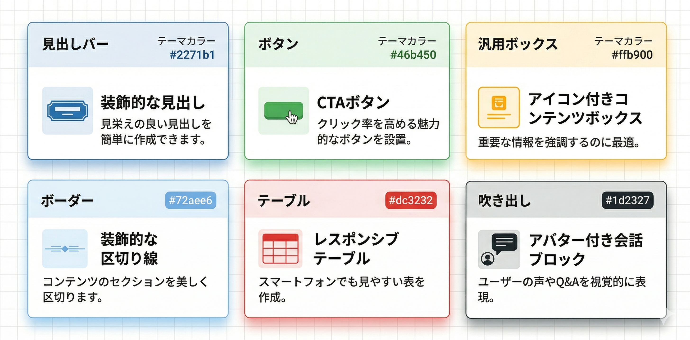

Kashiwazaki SEO Blocks マニュアル

WordPressのブロックエディタ（Gutenberg）専用に設計された、軽量・レスポンシブ・SEO最適化されたカスタムブロックコレクションです。
Kashiwazaki SEO Blocksは、SEO対策の現場で実際に必要とされるコンテンツ表現を、コードを書くことなく実現するために開発されました。見出しバー・ボタン・汎用ボックス・ボーダー・テーブル・吹き出しの6種類のブロックを提供し、すべてのブロックがセマンティックなHTML構造で出力されるため、検索エンジンにとって理解しやすいページ構造を自然に構築できます。
6種類のブロック
見出しバー・ボタン・汎用ボックス・ボーダー・テーブル・吹き出しの6ブロック
プリセット機能
吹き出し・ボタン・ボックスのスタイルを保存・再利用。一括変換にも対応
使用状況ダッシュボード
ブロックの使用統計をリアルタイムで確認。投稿ごとの使用状況も把握
SEO / GEO における強み
SEO（検索エンジン最適化）およびGEO（生成エンジン最適化）の両面で、コンテンツの品質と技術的な基盤を支えるプラグインです。
正しい見出し階層によるページ構造の明示
見出しバーブロックは <h2>〜<h6> の見出しレベルを選択でき、ページ内の情報階層を正しく維持できます。検索エンジンは見出しタグからページの主題・副題を判断するため、装飾目的でフォントサイズを変えるのではなく、意味的に正しい見出し構造を使うことがSEOの基本です。このブロックは見た目のカスタマイズと正しいHTMLセマンティクスを両立します。
テーブルによる構造化データの提示
テーブルブロックは <thead> / <tbody> を含む標準的なテーブル構造で出力されます。比較表・料金表・仕様一覧などの情報をテーブルで整理すると、検索エンジンがデータの関係性を理解しやすくなります。また、GEO（AI検索）においてもテーブル形式のデータは引用されやすく、AI Overviewやチャット型検索での回答ソースとして選ばれる可能性が高まります。
吹き出しによる専門家コメントの視覚的表現
吹き出しブロックを使うことで、記事内に専門家のコメントや監修者の見解を明確に区別して表示できます。これはE-E-A-T（経験・専門性・権威性・信頼性）を意識したコンテンツ設計に役立ちます。ただし、吹き出しブロック自体は構造化データ（JSON-LD等）を出力するものではないため、検索エンジンへの直接的なシグナルではなく、ユーザーと評価者に対して「誰が言っているのか」を明示するためのUI要素です。
GEOを意識したコンテンツ構成
AI検索（ChatGPT、Gemini、Perplexity等）がWebページを参照する際、明確な見出し構造・箇条書き・テーブル・注意書きといった整理されたコンテンツが優先的に引用される傾向があります。本プラグインの汎用ボックス（info / warning / tip等のアイコン付き）や見出しバーを活用して情報を視覚的・構造的に整理することで、AIが回答を生成する際のソースとして選ばれやすいページを構築できます。
Core Web Vitalsへの影響を最小化
フロントエンドCSSは8.4KB（minified）のみで、JavaScriptの読み込みはゼロです。ブロック系プラグインはページ速度に悪影響を与えがちですが、本プラグインは必要最小限のCSSだけを出力します。LCP・CLS・INPといったCore Web Vitalsの指標を悪化させないため、プラグイン導入によるページ速度の低下を心配する必要がありません。
モバイルファースト対応
すべてのブロックがレスポンシブデザインに対応しています。テーブルブロックはモバイル端末で横スクロールに自動切り替わり、吹き出しブロックはアバターの配置が画面幅に応じて調整されます。Googleはモバイルファーストインデックスを採用しており、モバイルでの表示品質はインデックスとランキングの両方に影響します。

目次
| ページ | 内容 |
|---|---|
| 概要 | プラグインの特徴・SEO/GEOの強み・動作要件を紹介 |
| インストール・使い方 | インストール手順・基本操作・ダッシュボード・プリセット機能 |
| ブロック詳細 | 各ブロックの設定項目・オプションを詳しく解説 |
| トラブルシューティング | よくある問題と解決方法・動作要件・技術仕様 |
動作要件
| 項目 | 要件 |
|---|---|
| WordPress | 6.0以上（ブロックエディタ必須） |
| PHP | 7.4以上 |
| 外部依存 | なし（WordPress標準のブロックエディタAPIのみ使用） |